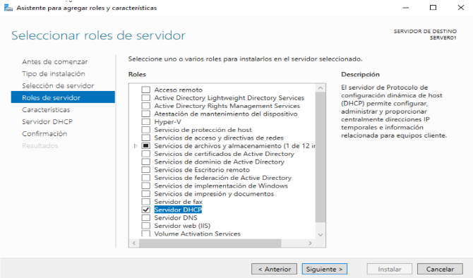

→ [ Beyond ] ←
Instalar Windows Server 2019
Instalamos en una máquina virtual Windows Server 2019
Creamos nuestra VM en nuestro VirtualBox.
Le damos a Instalar ahora.
Seleccionamos la versión que queramos (en este caso Standard con escritorio).
Configuramos el usuario administrador.

Verificamos la instalación al terminar.
Configurar DHCP
Instalamos el servicio DHCP y lo hacemos funcionar.
Configuramos el adaptador de red del servidor.
Verificamos y ponemos IP estática al adaptador de red.
Instalamos el servicio DHCP.
Cuando finalice tendremos que configurarlo.
Nos dirigiremos al administrador del servidor y el apartado de DHCP.
Crearemos un nuevo ámbito.
Le asignamos un nombre y el rango de IPs.
Ahora configuraremos la puerta de enlace y el servidor DNS.
Podemos comprobar que nos ha asignado correctamente la IP en nuestro cliente de Windows.